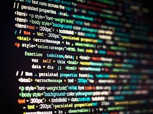
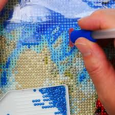

Who Is Riya?
Welcome to all about my passions, hobbies and interests
- Coding
Description I love to code as it helps me learn practical skills and out of the box thinking. It is always so satisfying to achieve a specified result or when your code actually works. It always fuels me up to understand how things work and practice my logic based thinking. I also love how we can use coding to solve real world problems and apply it to daily life. I love doing side projects such as web development (which is what I am doing right now!), wanting to get into app development, and participating in Hackathons!

- Music
Description I don't only love listening to music, but I also love to create it. Music plays a big role in my life, always helping me cope with emotions or helping me get through a difficult period of my life. Whether I am listening to it or creating it, music has a significant effect on my emotions and my state of mind.
- Running
Description Running always helps me get my mind off of things. Whenever I need to take a break from the stressors of the real world, I resort to the comfort of the treadmill which always helps me out of whatever mood I am in and just helps me focus on running. Running is a way I can help myself be ready to take on the challenges of my daily life whether it be school, friends, or family.
- Video Editing
Description Another one of my passions is video editing. Whether it is editing on Capcut, Imovie or Filmora, I always use video editing as a way to kind of process my emotions. It is very similar to the king of passion and love I have for coding. It may be a lot of hard work, but at the end of the process, the creation that I produced makes all of the work worth it. Whenever I am not doing school work or busy with other things in my daily life, I resort to my laptop and video editing, trying to see if I can make what is in my head come to life.
- Diamond Art
Description I am sure you haven't heard of diamond art before as even I hadn't even known about it until COVID. Staying at home with not much to do, I took up diamond art. Diamond art is when there is a sheet that is color coded and it is some type of work of art. In a diamond art kit, you are given this piece of work and a lot of tiny plastic beads (which resemble the diamonds, they are not real of course!). In order to complete the picture, you must put all the little beads where they are supposed to go (it is color coded on the sheet of art). It is extremely satisfying and creates something pretty to look at when the process is finished.
